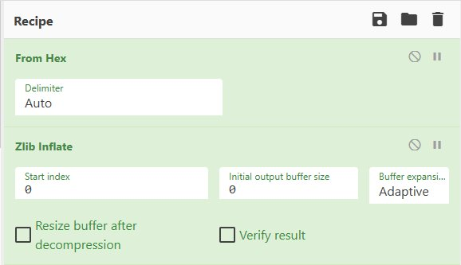

The PDF File Structure
A technically precise walkthrough of how a PDF is organised — from the first byte to the last %%EOF. Each concept here is something you will navigate directly during the lab.
📌 1. The Four Sections
Every PDF file — regardless of how it was created — follows the same four-section structure defined in ISO 32000-2:2020, §7.5. Understanding this structure is what lets you navigate to any object in any PDF, with or without specialist software.
| # | Section | Role |
|---|---|---|
| 1 | Header | First two lines of the file. Declares the PDF version and signals that the file contains binary data. |
| 2 | Body | The bulk of the file. Contains all indirect objects: the document catalog, pages, fonts, images, and content streams. |
| 3 | Cross-Reference Table (xref) | A fixed-width lookup table mapping every object number to its exact byte offset in the body. Enables random access: a reader can jump directly to object 47 without scanning the whole file. |
| 4 | Trailer | Identifies the document root (/Root) and metadata object (/Info), records the xref byte offset (startxref), and ends with %%EOF. |
The annotated layout below shows how these four sections appear in a real file. The byte offsets on the left are what you will see in a hex editor:
Open any lab PDF in HxD (Windows) or xxd lab01_structure.pdf | head -5 (Linux). The very first bytes will be 25 50 44 46 2D — ASCII for %PDF-. Scroll to the end and you will see 73 74 61 72 74 78 72 65 66 (startxref) followed by the xref offset as a plain decimal number, then 25 25 45 4F 46 (%%EOF). The xref offset tells you exactly where to jump to find the cross-reference table.
peepdf: peepdf -i lab01_structure.pdf then pdf> info shows the PDF version, object count, and whether the file is encrypted or linearised. pdf> tree shows the full object hierarchy from Catalog down to Page.
qpdf: qpdf --json lab01_structure.pdf emits a JSON representation of the entire file structure including the trailer dictionary values (/Root, /Info, /Size). Pipe through python3 -m json.tool for readable output.
📦 2. Indirect Objects
In the layout above, the Body section says it contains indirect objects. Every significant piece of data in a PDF — every page, every image, every font, every metadata record — is stored as one. Understanding indirect objects is the single most important concept for navigating a PDF forensically.
What an indirect object is
An indirect object is a self-contained data block with a unique numeric identity. That identity is two numbers: an object number (unique ID) and a generation number (almost always 0 in modern files — it only increments when an object is deleted and reused). The xref table maps that identity to a byte offset so any reader — or examiner — can jump directly to it.
The reason PDF uses indirect objects rather than inline data is random access: a 500-page document does not need to be read from page 1 to reach page 347. The reader looks up object 347 in the xref table, seeks to that byte offset, and reads the page directly. Forensically, this also means you can jump to any suspicious object the moment you know its number.
What an indirect object looks like in the raw file
Every indirect object has the same wrapper syntax, regardless of what it contains:
N G obj
<< ... object content ... >>
endobjA realistic example — object 2, the document Info dictionary, which holds the metadata you will analyse in Module 02:
2 0 obj
<< /Creator (Microsoft Word 2019)
/Producer (Microsoft Word 2019)
/CreationDate (D:20250301120000+00'00')
/ModDate (D:20250301120000+00'00')
>>
endobjTo reference this object from elsewhere in the file, you write 2 0 R — the object number, the generation number, and the letter R. For example, the trailer says /Info 2 0 R, meaning "the Info dictionary is object 2."
Reading dictionary keys: /Type, /Catalog, /Pages, and indirect references
When you run pdf> object 1 in peepdf on a typical PDF, the output looks like this:
<< /Type /Catalog
/Pages 3 0 R
>>Every key in this dictionary is a Name (always starting with /). Here is what each one means:
| Key | Value | What it means |
|---|---|---|
/Type | /Catalog |
Every significant PDF object declares what type it is using the /Type key. /Catalog means this object is the Document Catalog — the single entry point into the document. A PDF reader always starts here. The xref table’s trailer says /Root 1 0 R, meaning “object 1 is the Catalog.” |
/Pages | 3 0 R |
An indirect reference to object 3. The value 3 0 R means “go to object number 3, generation 0.” Object 3 is the Pages tree, which in turn lists every page in the document. The Catalog does not contain the pages directly — it points to a separate object that does. This indirection is what allows a reader to jump to any page without reading the whole file. |
Object 3 (the Pages tree) will look something like this:
<< /Type /Pages
/Kids [4 0 R] % array of references to individual pages
/Count 1 % total number of pages in this document
>>And following the reference 4 0 R to the first actual page:
<< /Type /Page
/Parent 3 0 R % reference back to the Pages tree
/MediaBox [0 0 612 792] % page size in points (8.5 x 11 inches)
/Contents 5 0 R % reference to the content stream for this page
/Resources 6 0 R % fonts, images, and other resources used on this page
>>This chain — Catalog → Pages → Page → Contents — is the backbone of every PDF. Every forensic investigation follows this chain. The pdf> tree command in peepdf walks it for you automatically and prints the hierarchy.
The /Type key is how you identify what an object is. The most important values in forensic work:
/Catalog— the document root; always object 1 in most PDFs/Pages— the page tree node; lists all pages via/Kids/Page— a single page; has/Contentsand/Resources/XObjectwith/Subtype /Image— an embedded image/XObjectwith/Subtype /Form— a Form XObject (used in BBOX_CROP)/Annot— an annotation (sticky note, FreeText overlay, highlight)/Font— an embedded font resource
When peepdf’s pdf> objects command lists all objects, the type column is derived from this /Type key.
What an indirect object looks like at hex level
In a hex editor, jump to the byte offset stored in the xref table for object 2. You will see the ASCII text 32 20 30 20 6F 62 6A — that is 2 0 obj. The dictionary content follows immediately, then 65 6E 64 6F 62 6A (endobj) marks the end. Everything between those two markers is the object's data.
peepdf: pdf> objects lists every object number and its type. pdf> object 2 prints the raw content of object 2 exactly as it appears in the file — no decompression, no interpretation.
qpdf: qpdf --show-object=2 lab01_structure.pdf prints the same thing. This is the primary command for independently verifying any finding the forensics application reports — the obj_locator field in every report gives you the object number to use here.
🔀 3. Streams and Filters
Most indirect objects contain only a dictionary. But some objects — page content, images, embedded fonts, XMP metadata — contain a large block of binary data. These are stream objects. A stream object is an indirect object whose dictionary is immediately followed by a block of raw bytes:
5 0 obj
<< /Length 487
/Filter /FlateDecode
>>
stream
... 487 bytes of compressed binary data ...
endstream
endobjThe /Length key tells a reader exactly how many bytes to read. The /Filter key names the compression or encoding algorithm applied to those bytes. Without knowing the filter, the binary data is unreadable — which is why you must decompress a stream before you can inspect its contents.
Why streams are compressed
Page content streams contain hundreds of drawing operators per page; image streams contain raw pixel data. Storing these uncompressed would make PDFs many times larger. /FlateDecode (zlib) is by far the most common filter and typically achieves 60–80% size reduction on text content. Images use JPEG (/DCTDecode) or scanner-specific formats.
What a stream looks like at hex level
After the dictionary closing >>, a PDF reader expects the literal bytes 73 74 72 65 61 6D 0A (stream
). What follows is raw compressed binary — for a FlateDecode stream it will start with 78 9C or 78 DA, the zlib magic bytes. The stream ends at 65 6E 64 73 74 72 65 61 6D (endstream).
Decoding a FlateDecode stream manually — avoiding the HxD copy error
A common mistake is to copy bytes from HxD using Edit → Copy → Copy as Hex String, then paste that into an online zlib decompressor. This produces the "InvalidCharacterError: Failed to execute 'atob' on 'Window': The string to be decoded is not correctly encoded" error. The reason: online decompressors expect Base64-encoded input, not a hex string. HxD gives you hex; the site wants Base64. They are two different ways of representing the same bytes, and you must convert between them.
A hex string looks like 789C CB48CDC9C90700062C0215 — pairs of hex digits, one per byte. Base64 looks like eJzLSM3JyQcABiwCFQ== — a different encoding of the same bytes using letters, digits, +, and /. The atob() function in browsers only accepts Base64. Pasting a hex string into it causes the error you saw.
There are two reliable approaches. The first avoids the problem entirely by using the course tools directly. The second shows how to do it manually if you need to.
Both tools decompress FlateDecode streams for you automatically. You never need to touch HxD for this task:
# Step 1: find which object number holds the content stream
# (from pdf> page 1 in peepdf, or from the /Contents key)
# Step 2: qpdf decodes FlateDecode automatically:
qpdf --show-object=5 --filtered-stream-data lab01_structure.pdf
# The output is the raw decoded text (PDF operators).
# Redirect to a file if you want to read it more easily:
qpdf --show-object=5 --filtered-stream-data lab01_structure.pdf > stream5_decoded.txt
notepad stream5_decoded.txt
# In peepdf interactive mode:
# pdf> stream 5
# (peepdf also decompresses automatically)# qpdf decodes FlateDecode automatically:
qpdf --show-object=5 --filtered-stream-data lab01_structure.pdf
# Save to file and inspect:
qpdf --show-object=5 --filtered-stream-data lab01_structure.pdf > stream5_decoded.txt
cat stream5_decoded.txt
# Or in peepdf:
# pdf> stream 5If you specifically need to use an online tool alongside HxD, CyberChef (gchq.github.io/CyberChef) handles this cleanly because it accepts hex input directly — no Base64 conversion required.
- In HxD: click inside the hex panel (the left column showing pairs of hex digits). Press Tab if needed to make sure the hex column is focused rather than the text column — you can tell it is focused because the cursor appears as a block in the hex area. Select your stream bytes, then press Ctrl+C. HxD copies space-separated hex pairs, e.g.
78 9C CB 48 CD C9 ....
Note: there is no "Edit → Copy → Copy Hex String" option in HxD 2.5. The Ctrl+C method with the hex column focused is the correct approach. - Open CyberChef: go to gchq.github.io/CyberChef and paste your hex string into the Input box.
- Add "From Hex" to the recipe: in the Operations search box (top-left), type
From Hexand drag it into the Recipe panel. This step converts your space-separated hex pairs into raw bytes. Note: there is no input format dropdown in CyberChef — the conversion is handled via a recipe step. - Add "Zlib Inflate": search for
Zlib Inflateand drag it into the recipe below "From Hex". The decoded content stream operators appear immediately in the Output panel.

The completed Recipe panel: From Hex (Delimiter: Auto) above Zlib Inflate.
Bookmark the recipe: once you have both steps set up, use the Save icon (floppy disk, top-right) → Save recipe link to get a URL you can bookmark and reuse throughout the course without rebuilding it each time. You can also use this direct link which has the recipe pre-loaded: CyberChef: From Hex → Zlib Inflate.
If you use an alternative site such as codebeautify.org for this task, be aware that its decompressor input box expects Base64-encoded data, not a hex string. Pasting hex directly will produce an error along the lines of "Failed to execute 'atob'". If you prefer that site, you would first need to convert your hex to Base64 before pasting — an extra step that CyberChef avoids by letting you add From Hex as a recipe step to handle the conversion inline.
If you prefer working entirely in Python without any online tool, here is the equivalent procedure:
The commands below are shell one-liners (note the python -c "..." wrapper) meant to be typed directly into PowerShell or a terminal — not saved as a standalone .py file. If you save and run them as a .py file with python script.py, you will get a SyntaxError: unterminated string literal because python -c " is shell syntax for launching Python, not valid Python code itself.
If you prefer a standalone script, see the "Save as a .py file instead" version further down, which is plain Python with no shell wrapper.
The value 78 9C CB48CDC9C90700062C0215 in the examples below is a small, generic zlib-compressed sample used only to demonstrate the code syntax. Running it as-is will correctly print hello — that confirms your Python, zlib, and binascii setup all work, but it does not come from lab01_structure.pdf or any other lab file.
To decode a real content stream, replace the hex_str value with the actual bytes you copied from HxD for that object's stream (the section between stream and endstream, starting with the zlib magic bytes 78 9C or 78 DA). The output will then be the real PDF content stream operators — BT, Tj, cm, Do, and so on — rather than the word "hello".
# Run this AT THE COMMAND PROMPT, not saved as a .py file:
python -c "
import zlib, binascii
hex_str = '78 9C CB48CDC9C90700062C0215' # <-- PLACEHOLDER: replace with your real bytes from HxD
raw = binascii.unhexlify(hex_str.replace(' ', ''))
print(zlib.decompress(raw).decode('latin-1'))
"# Run this AT THE COMMAND PROMPT, not saved as a .py file:
python -c "
import binascii, base64
hex_str = '78 9C CB48CDC9C90700062C0215' # <-- PLACEHOLDER: replace with your real bytes from HxD
raw = binascii.unhexlify(hex_str.replace(' ', ''))
print(base64.b64encode(raw).decode())
"
# Copy the Base64 output and paste THAT into codebeautify.org/zlib-decompress-onlineimport zlib, binascii
hex_str = '78 9C CB48CDC9C90700062C0215' # <-- PLACEHOLDER: replace with your real bytes from HxD
raw = binascii.unhexlify(hex_str.replace(' ', ''))
print(zlib.decompress(raw).decode('latin-1'))When selecting stream bytes in HxD, be precise about where the stream data starts and ends:
- The word
streamis followed by a newline (0A) or carriage-return+newline (0D 0A). The compressed data starts at the first byte after that newline — typically78 9Cor78 DAfor FlateDecode. - The compressed data ends at the byte immediately before the newline that precedes
endstream. Do not include theendstreamkeyword bytes or any trailing newline in your selection. - If the first two bytes of your selection are not
78 9C,78 DA, or78 01, you have selected the wrong range.
Filter types you will encounter
| Filter Name | Algorithm | Used For | How to Decode |
|---|---|---|---|
/FlateDecode | zlib/DEFLATE | Page content, XMP metadata, most general streams | qpdf --filtered-stream-data or peepdf pdf> stream N |
/DCTDecode | JPEG | Photographic colour images — lossy | mutool extract saves as .jpg directly |
/CCITTFaxDecode | CCITT Group 4 | Scanner bi-tonal (black & white) images | mutool extract saves as .png or .tiff |
/JBIG2Decode | JBIG2 | High-compression bi-tonal, modern scanner PDFs | mutool extract |
/ASCII85Decode | Base-85 | Legacy ASCII encoding of binary data | qpdf --filtered-stream-data |
peepdf: pdf> stream 5 prints the decoded content of stream object 5 (peepdf decompresses automatically). This is how you read a page content stream to look for overlay operators.
qpdf: qpdf --show-object=5 --filtered-stream-data lab01_structure.pdf outputs the decoded stream bytes to stdout. Pipe to a file or to grep to search for specific operators. This is the most reliable method for content stream analysis.
mutool: mutool extract lab01_structure.pdf decodes and saves every image stream to a file in the current directory — the fastest way to obtain the raw image data regardless of which filter was used.
✍️ 4. Content Streams and Operators
Every page in a PDF has a /Contents key that references a stream object. That stream contains the page's content stream: a sequence of operands and operators that describe everything visible on the page — text, graphics, and image placements. It is essentially a small stack-based programming language.
A decoded content stream for a simple page might look like this:
q % save graphics state
1 0 0 1 72 720 cm % move coordinate origin to (72, 720) pts
Q % restore graphics state
BT % begin text block
/F1 12 Tf % set font F1 at 12 pt
72 700 Td % move text cursor to position (72, 700)
(Invoice Total: $8,200) Tj % render the string
ET % end text block
q
200 0 0 150 72 500 cm % place image: 200x150 pts at (72,500)
/Im0 Do % invoke image Im0 (draws it)
QReading content streams is the core skill for text overlay detection (Module 05) and image manipulation detection (Module 04). The forensically critical operators are:
| Operator | Meaning | Why It Matters Forensically |
|---|---|---|
q / Q | Save / restore graphics state | Defines scope of transformations. Manipulation code is almost always wrapped in a q ... Q block. |
cm | Concatenate matrix (CTM) | Sets position, scale, and rotation of everything that follows. The six numbers in the matrix encode where an image is placed and how large it appears. |
Do | Invoke XObject | Places an image or Form XObject. Every image you see in a PDF got there via a Do call. BBOX_CROP and OFFPAGE findings both come from analysing what Do is placing and where. |
BT / ET | Begin / end text block | All text rendering happens here. Text-over-text overlays are two BT...ET blocks at the same coordinates. |
Tj / TJ | Show text string | The operator that actually renders characters to the page. |
1 1 1 rg | Set fill colour to white | The first step of a white-box overlay. Always followed by re (rectangle) and f (fill) to paint a white rectangle over content. |
re / f | Rectangle / fill | Together with 1 1 1 rg, used to paint the concealing white box in Module 05 overlays. |
W / W* | Set clipping path | Restricts rendering to within a path. Used in EXPLICIT_CLIP manipulation to hide image content. |
peepdf: pdf> page 1 shows the resource dictionary for page 1, including the /Contents object number. Then pdf> stream N (where N is that object number) prints the decoded operators.
qpdf: First find the /Contents object number from qpdf --show-object=PAGE_OBJ_NUM, then: qpdf --show-object=CONTENTS_OBJ_NUM --filtered-stream-data lab01_structure.pdf. On Linux, pipe to grep -n "1 1 1 rg\|Do\|BT" to quickly scan for forensic indicators. On Windows use findstr.
🖼️ 5. XObjects — Images and Forms
When a content stream executes /Im0 Do, it is calling an XObject (External Object) by name. XObjects are reusable graphic resources defined as indirect objects and referenced from a page's resource dictionary. Two types are central to PDF forensics:
Image XObjects
An Image XObject is an indirect stream object containing raw or compressed raster pixel data. Its dictionary declares the image dimensions, colour space, and filter. When the content stream executes /Im0 Do, the image is rendered into the current coordinate space established by the preceding cm matrix.
8 0 obj
<< /Type /XObject
/Subtype /Image
/Width 400 % pixel width of the image data
/Height 300 % pixel height of the image data
/ColorSpace /DeviceRGB
/BitsPerComponent 8
/Filter /DCTDecode % JPEG-compressed
/Length 14782
>>
stream
... 14782 bytes of JPEG data (starts with FF D8 FF) ...
endstream
endobjThe pixel dimensions (/Width and /Height) are the dimensions of the stored data. The size it is displayed at on the page is set by the cm matrix in the content stream — and those two numbers do not have to match. That discrepancy is the basis of the DPI_ANOMALY finding in Module 04.
Form XObjects
A Form XObject is a self-contained mini-page: it has its own content stream, its own resource dictionary, and critically, its own /BBox (bounding box). Only content that falls within the BBox rectangle is rendered when the Form is invoked. Anything outside the BBox is clipped and invisible — but the data still exists in the file.
7 0 obj
<< /Type /XObject
/Subtype /Form
/BBox [0 0 200 150] % only this region is rendered
/Resources << /XObject << /Im0 8 0 R >> >>
>>
stream
400 0 0 300 0 0 cm % place Im0 at 400x300 pts — LARGER than the BBox
/Im0 Do
endstream
endobjIn the example above, object 8 is a 400×300 pixel image. The Form places it at 400×300 points — filling the entire Form canvas. But the Form's /BBox is only [0 0 200 150]: the left half and lower half. The right half and upper half of the image extend beyond the BBox and are clipped — they never appear in any PDF viewer. Open the PDF and you see a 200×150 image. Extract the image with mutool extract and you get a 400×300 image with content in the portions you never saw.
The scenario above is exactly what the BBOX_CROP finding detects. This lesson introduces the mechanism so you understand why it works; Module 04 covers how to measure the hidden area, extract the concealed content, and document the finding for court. For now, the key takeaway is: the BBox clips what is rendered, not what is stored.
peepdf: pdf> object 8 shows the Image XObject dictionary — you can read /Width, /Height, /Filter, and /ColorSpace directly. pdf> object 7 shows the Form XObject dictionary including its /BBox. pdf> stream 7 decodes the Form's content stream, revealing the cm matrix and Do call.
qpdf: qpdf --show-object=8 lab01_structure.pdf prints the Image XObject dictionary. qpdf --show-object=7 --filtered-stream-data lab01_structure.pdf decodes and prints the Form XObject's content stream, where you can read the exact cm values and compare them to the /BBox.
mutool: mutool extract lab01_structure.pdf saves every Image XObject to a file in the current directory, bypassing the BBox entirely — you get the full pixel data regardless of how much was visible.